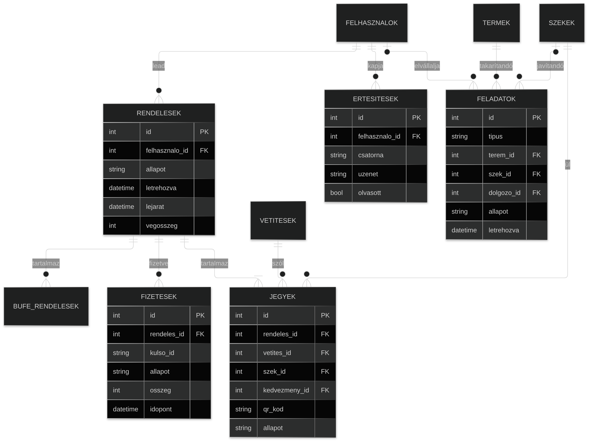
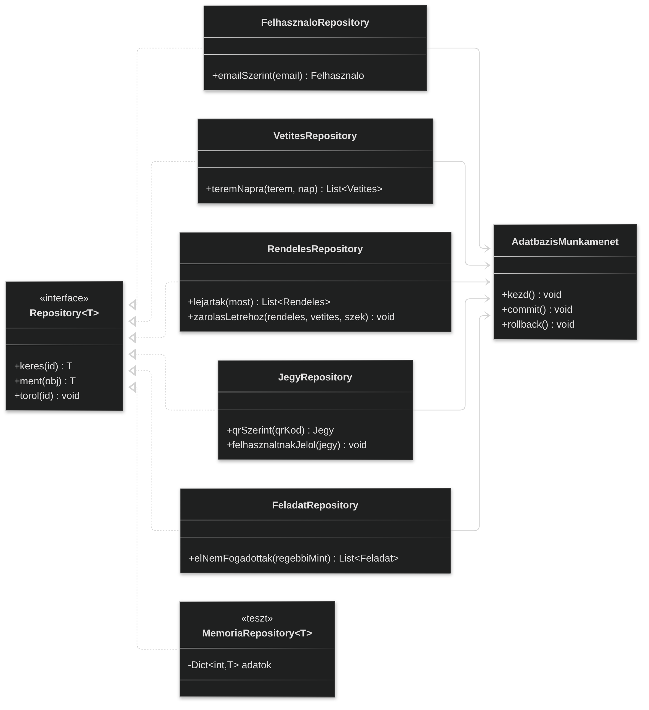
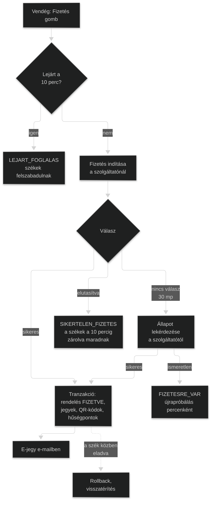
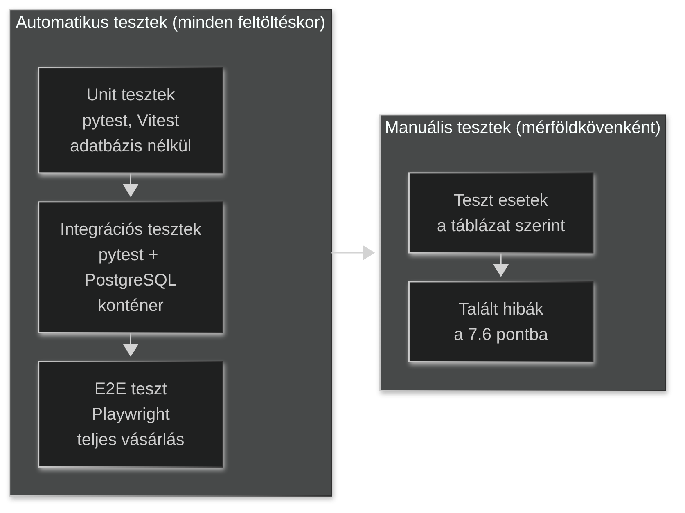

| Padányi Milán | FMUL84 | mpadanyi09@gmail.com |
| Ujfalussy Kristóf | ZZORDN | kristof.ujfalussy@student.uni-miskolc.hu |
| Kecskés Gábor | QDY6TL | gabor.kecskes@student.uni-miskolc.hu |
| Lengyel János | N9XZKQ | lengyeljanos2004@gmail.com |
| Laczkó Norbert | SLIIKD | laczkonorbert4@gmail.com |
| Dátum | Verzió | Leírás | Szerző |
|---|---|---|---|
| 2026-11-20 | 1.0 | Létrejött a dokumentum. Fejléc, történet táblázat, tartalomjegyzék és a fejezetek váza a tárgy Rendszertervezés sablonja és a H5 követelményei alapján. A főoldalon a link beállítása. | Lengyel János |
| 2026-11-20 | 1.1 | Bevezetés (1. pont), a felület egységes hibakódjai (2. pont), az adatbázis kezelő és az eszközök kiválasztásának indoklása (3.1 pont). | Ujfalussy Kristóf |
| 2026-11-20 | 1.2 | Adatmodellek (3.2–3.4 pont): az új táblák ER-diagramja, a teljes relációs séma, a repository osztályok és diagramjuk. | Padányi Milán |
| 2026-11-21 | 1.3 | Objektumtervezés (4. pont): aktív objektumok és az ütemező, a kapcsolatok megvalósítása, modulok és felelőseik. A funkcionális modell kiegészítése (5. pont), a váz tervezett tartalma és futtatása (6. pont). | Laczkó Norbert |
| 2026-11-21 | 1.4 | Tesztelési terv (7.1–7.4 pont): tesztelési szintek, 10 automatikus teszt, integrációs tesztek, segédosztályok, minta teszt osztály. | Kecskés Gábor Lengyel János |
| 2026-11-21 | 1.5 | Manuális tesztek (7.6 pont): 10 teszt eset megtervezése a Felhasználói Kézikönyv lépései alapján, a hibák rögzítésének módja (7.7 pont). | Padányi Milán Ujfalussy Kristóf |
| 2026-11-21 | 1.6 | Döntések a H4 nyitott kérdéseiről (8. pont), kockázatok (9. pont). A dokumentum átnézése, a hivatkozások ellenőrzése. | Kecskés Gábor |
A H5-ben még nincs implementáció: a dokumentum a rendszer vázának (skeleton) és tesztelésének a terve. A tesztek ezért még nem futottak le; a dokumentum azt írja le, hogy mit, hogyan és milyen elvárt eredménnyel tesztelnénk.
| Dokumentum | Amit innen felhasználtunk |
|---|---|
| (H1) Projekt terv | Technológiák, tesztelési követelmények (5. pont). |
| (H3) SRS dokumentum | Funkcionális követelmények (FK-01 – FK-39), üzleti szabályok (ÜSZ-01 – ÜSZ-10), nem funkcionális követelmények és ellenőrzési módjuk (NFK-01 – NFK-12), adatbázis-terv. |
| (H4) Analízis Modell | Entitás és vezérlő osztályok, csomagdiagram, az adatbázis szükséges változtatásai (2.6 pont), felhasználói visszajelzések (4.9 pont), nyitott kérdések (6. pont). |
| Felhasználói Kézikönyv | A manuális tesztek a kézikönyv lépéseit követik; a tesztekben elvárt hibaüzeneteket a kézikönyvbe is felvettük. |
SZEK_FOGLALT), a frontend ebből
írja ki a magyar szöveget. Így a kézikönyv 6. pontjában lévő üzenetek mindenhol ugyanúgy jelennek meg.| Hibakód | HTTP státusz | Megjelenő szöveg | Hol fordul elő |
|---|---|---|---|
HIBAS_BELEPES | 401 | „Hibás e-mail cím vagy jelszó.” | Bejelentkezés |
LEJART_MUNKAMENET | 401 | „A munkamenet lejárt. Jelentkezzen be újra.” | Bármely bejelentkezést igénylő oldal |
NINCS_JOGOSULTSAG | 403 | „Ehhez a művelethez nincs jogosultsága.” | Dolgozói és admin oldalak |
EMAIL_FOGLALT | 409 | „Ezzel az e-mail címmel már regisztráltak.” | Regisztráció |
SZEK_FOGLALT | 409 | „Ezt a széket közben valaki más választotta.” | Székválasztás |
SZEK_LIMIT | 422 | „Egyszerre legfeljebb 10 széket választhat.” | Székválasztás |
KORHATAR | 403 | „Erre a filmre nem vásárolhat jegyet.” | Székválasztás |
LEJART_FOGLALAS | 410 | „Lejárt a foglalási idő.” | Büfé, összesítő, fizetés |
SIKERTELEN_FIZETES | 402 | „Sikertelen fizetés.” | Fizetés |
LEMONDAS_KESO | 422 | „A jegyet a vetítés előtt 2 órán belül már nem lehet lemondani.” | Jegyeim |
JEGY_FELHASZNALT | 409 | „A jegyet már felhasználták.” | Jegyellenőrzés |
JEGY_MASIK_MOZI | 422 | „A jegy másik moziba szól.” | Jegyellenőrzés |
BEENGEDES_IDON_KIVUL | 422 | „A beengedés még nem kezdődött el.” / „A beengedés már lezárult.” | Jegyellenőrzés |
VETITES_UTKOZIK | 409 | „A vetítés ütközik egy másikkal.” | Műsortervezés |
A hibakódok egy helyen, a backend kozos/hibak.py fájljában vannak felsorolva, a magyar szövegek pedig a frontend
lib/hibauzenetek.ts fájljában. Ha új hiba kerül a rendszerbe, mindkét helyre fel kell venni, és a
Felhasználói Kézikönyv hibaüzenet táblázatába is.
| Terület | Választás | Miért |
|---|---|---|
| Adatbázis kezelő | PostgreSQL 16 | Már a Projekt tervben kiválasztottuk. Tranzakciók (NFK-08), egyedi index feltétellel a dupla eladás ellen. |
| Backend keretrendszer | Python, FastAPI | A H1-ben két lehetőség volt (FastAPI vagy Spring Boot). A FastAPI-t választottuk az AI ajánló könnyebb bekötése miatt. |
| Kapcsolat az adatbázissal | SQLAlchemy 2 (ORM) | Az entitás osztályokat Python osztályként írjuk le, az SQL-t az ORM készíti el. |
| Séma változások | Alembic migrációk | Az adatbázis séma változásai a Git-ben, verziózva vannak. |
| Bemeneti adatok ellenőrzése | Pydantic | A kérések és válaszok formáját leíró osztályok (DTO), automatikus Swagger leírás. |
| Tesztadatbázis | PostgreSQL Docker konténerben | Az integrációs tesztek ugyanazon az adatbázis kezelőn futnak, mint az éles rendszer. |
A Projekt tervben a backendhez két lehetőséget hagytunk nyitva. A FastAPI mellett döntöttünk, mert a csapat több tagja ismeri a Pythont, az OpenAI és a QR-kód könyvtárak Pythonban egyszerűen használhatók, és a FastAPI a végpontok leírásából automatikusan elkészíti a Swagger dokumentációt, amit a frontend fejlesztésénél használunk. Az adatbázist nem kézzel írt SQL-lel, hanem az SQLAlchemy ORM-mel érjük el: így a H4 entitás osztályai szinte egy az egyben átírhatók Python osztályokká. A séma minden változása egy Alembic migrációs fájlba kerül, így bármelyik csapattag gépén egy paranccsal ugyanaz az adatbázis jön létre. A teszteléshez is PostgreSQL-t használunk (nem pl. SQLite-ot), mert a dupla eladást kizáró feltételes egyedi index és a tranzakciók viselkedése adatbázisonként eltér.

jogosultsag mezővel (H4 2.6). Minden tábla elsődleges kulcsa
egy automatikusan növekvő id (ezt a táblázatban nem ismételjük). A vastagon szedett táblák és mezők újak az SRS-hez képest.
| Tábla | Mezők (típus) | Kulcsok, megszorítások |
|---|---|---|
| regiok | nev (text) | nev egyedi. |
| mozik | regio_id (int), nev (text), cim (text), varos (text), telefon (text) | FK regio_id. |
| termek | mozi_id (int), nev (text) | FK mozi_id; (mozi_id, nev) egyedi. |
| szekek | terem_id (int), sor (text), szam (int), tipus (text), hibas (bool) | FK terem_id, törléskor kaszkád; (terem_id, sor, szam) egyedi. |
| filmek | cim (text), rendezo (text), jatekido_perc (int), korhatar (int), bemutato (date), leiras (text), trailer_url (text), imdb_id (text), imdb_ertekeles (numeric) | korhatar ∈ {0, 6, 12, 16, 18}; imdb_id egyedi. |
| mufajok | nev (text) | nev egyedi. |
| filmek_mufajok | film_id (int), mufaj_id (int) | Összetett PK (film_id, mufaj_id). |
| technologiak | nev (text), felar (int) | felar ≥ 0. |
| vetitesek | film_id (int), terem_id (int), technologia_id (int), kezdes (timestamp), nyelv (text), alapar (int) | FK-k; alapar > 0; az ütközést (ÜSZ-08) a MusorTervezoService ellenőrzi. |
| felhasznalok | nev (text), email (text), jelszo_hash (text), szuletesi_datum (date), telefon (text), jogosultsag (int), kedvezmeny_id (int), mozi_id (int), megerositve (bool) | email egyedi; jogosultsag ∈ {0, 1, 2}; mozi_id csak dolgozónál nem üres. |
| kedvezmenyek | tipus (text), szazalek (int) | szazalek 0–100 között. |
| husegpontok | felhasznalo_id (int), rendeles_id (int), pont (int), jovairva (timestamp) | A beváltás negatív pontként kerül be; az 1 évnél régebbi sorok nem számítanak (ÜSZ-09). |
| rendelesek | felhasznalo_id (int), allapot (text), csatorna (text), letrehozva (timestamp), lejarat (timestamp), vegosszeg (int) | allapot ∈ {KOSAR, FIZETESRE_VAR, FIZETVE, LEJART, LEMONDVA}; csatorna ∈ {ONLINE, PENZTAR}. |
| jegyek | rendeles_id (int), vetites_id (int), szek_id (int), kedvezmeny_id (int), ar (int), qr_kod (text), allapot (text), felhasznalva (timestamp) | allapot ∈ {ZAROLT, ERVENYES, FELHASZNALT, LEMONDOTT}; egyedi index (vetites_id, szek_id), ahol az állapot nem LEMONDOTT (NFK-08); qr_kod egyedi. |
| fizetesek | rendeles_id (int), kulso_id (text), allapot (text), osszeg (int), idopont (timestamp) | kulso_id egyedi. |
| ertekelesek | felhasznalo_id (int), film_id (int), csillag (int), szoveg (text), datum (timestamp) | csillag 1–5; (felhasznalo_id, film_id) egyedi. |
| bufe_termekek | nev (text), kategoria (text) | – |
| arak | bufe_termek_id (int), mozi_id (int), ar (int) | (bufe_termek_id, mozi_id) egyedi. |
| bufe_rendelesek | rendeles_id (int), bufe_termek_id (int), darab (int), extra (text), allapot (text) | allapot ∈ {FUGGOBEN, KIFIZETVE, KIADVA}. |
| feladatok | tipus (text), terem_id (int), szek_id (int), dolgozo_id (int), allapot (text), letrehozva (timestamp) | tipus ∈ {TAKARITAS, JAVITAS}; allapot ∈ {UJ, ELFOGADVA, KESZ, ESZKALALVA}. |
| ertesitesek | felhasznalo_id (int), csatorna (text), uzenet (text), olvasott (bool), letrehozva (timestamp) | FK felhasznalo_id. |
A szék zárolása nem külön tábla: zároláskor a jegy ZAROLT állapottal azonnal létrejön, a rendelés lejarat mezője pedig
megmondja, meddig érvényes. Mivel az egyedi index a zárolt jegyekre is vonatkozik, két vendég még a fizetés előtt sem tudja ugyanazt a széket
a kosarába tenni. A Filmkereső tábla elmarad (8. pont).
| Osztály | Feladata | Használja |
|---|---|---|
| AdatbazisMunkamenet | Megnyitja a kapcsolatot, kezeli a tranzakciót (commit / rollback) egy kérés idejére. | Minden repository |
| FelhasznaloRepository | Felhasználó keresése e-mail és azonosító szerint, mentés. | AuthService, JogosultsagOr |
| VetitesRepository | Vetítések lekérdezése teremre és napra, mentés. | MusorTervezoService, JegyfoglaloService |
| RendelesRepository | Rendelések, jegyek és büfé tételek mentése, lejárt rendelések keresése. | JegyfoglaloService, SzekZarolo |
| JegyRepository | Jegy keresése QR-kód alapján, felhasználtnak jelölés. | JegyEllenorzoService |
| FeladatRepository | Feladatok mentése, el nem fogadott feladatok keresése. | FeladatService |

Depends) érik el,
így minden szolgáltatás csak azokat az osztályokat látja, amelyeket a konstruktorában megkap.
| Objektum | Fajta | Mikor fut | Mit csinál |
|---|---|---|---|
| SzekZarolo.lejartakFelszabaditasa | Aktív (időzített) | 30 másodpercenként | Felszabadítja a 10 percnél régebben zárolt székeket. |
| FeladatService.eszkalal | Aktív (időzített) | Percenként | A 15 perce el nem fogadott feladatokról szól minden dolgozónak és az adminnak. |
| FeladatService.takaritastIndit | Aktív (időzített) | Minden vetítés végén | Takarítási feladatot hoz létre a teremhez. |
| ErtesitesKozpont | Aktív (folyamatosan fut) | Az alkalmazás indulásától | Tartja a WebSocket kapcsolatokat, kiküldi az üzeneteket. |
| Szolgáltatás osztályok (pl. JegyfoglaloService) | Passzív | Kérésenként | Az üzleti szabályok ellenőrzése. |
| Entitás osztályok | Passzív | – | Adattárolás. |
Az időzített feladatokat az APScheduler könyvtár futtatja, egy külön utemezo folyamatban (6.2 pont), nem a
webszerverben. Ennek oka, hogy premierkor a webszerverből több példány is futhat (NFK-04), és ha mindegyik elindítaná az időzítőt, egy lejárt
zárolást többször is felszabadítanánk, egy feladatot többször eszkalálnánk. Az ütemezőből mindig pontosan egy példány fut. Az ütemező
ugyanazokat a szolgáltatás osztályokat hívja, mint a végpontok, így az üzleti szabályok csak egy helyen vannak megírva.
| Kapcsolat a H4-ben | Megvalósítás | Példa |
|---|---|---|
| Asszociáció (1–N) | Idegen kulcs + SQLAlchemy relationship() | Vetites – Jegy |
| Kompozíció | Idegen kulcs, törléskor a részek is törlődnek (cascade) | Terem – Szek |
| N–M kapcsolat | Kapcsolótábla | Film – Mufaj |
| Öröklődés | Egy tábla, a jogosultsag mező szerint (single table inheritance) | Felhasznalo – Vendeg, Dolgozo, Admin |
| Interfész | Python Protocol osztály, a megvalósítás induláskor kerül be | FizetesiSzolgaltato, EmailKuldo |
| Stratégia minta | Az ArKalkulator egy ArSzabaly listát kap, sorban meghívja őket | TechnologiaFelar, NapszakSzabaly |
SzekValasztasKeres, RendelesValasz.backend/
├── app/
│ ├── main.py FastAPI alkalmazás, végpontok bekötése
│ ├── kozos/ AdatbazisMunkamenet, Ora, UzletiHiba, beállítások
│ ├── hitelesites/ AuthService, JwtKezelo, JogosultsagOr
│ ├── felfedezo/ Regio, Mozi, Film, Vetites, FilmAdatForras
│ ├── foglalas/ JegyfoglaloService, SzekZarolo, ArKalkulator, arszabalyok/
│ ├── bufe/ BufeTermek, Ar, BufeTetel
│ ├── penzugy/ Fizetes, FizetesiSzolgaltato, HusegSzamla
│ ├── uzemelteto/ MusorTervezoService, JegyEllenorzoService, FeladatService
│ ├── ertesites/ ErtesitesKozpont, WebSocket végpont
│ └── kulso/ adapterek: fizetés, OpenAI, IMDB, e-mail
├── migrations/ Alembic migrációk
└── tests/
├── unit/ pytest, adatbázis nélkül
├── integracios/ pytest, PostgreSQL konténerrel
└── segedek/ FakeOra, FakeFizetesiSzolgaltato, ...| Modul | Felelős | Kapcsolódó követelmények |
|---|---|---|
| kozos, hitelesites, migrations | Padányi Milán | FK-01 – FK-07, NFK-06, NFK-07 |
| felfedezo, bufe | Ujfalussy Kristóf | FK-08 – FK-14, FK-22 – FK-25 |
| foglalas, penzugy | Kecskés Gábor | FK-15 – FK-21, FK-26 – FK-30 |
| uzemelteto, ertesites | Laczkó Norbert | FK-31 – FK-39 |
| kulso, frontend váz, CI, Docker | Lengyel János | NFK-05, NFK-10, NFK-11 |
A felosztás a H4 csomagdiagramját követi: aki egy modult fejleszt, az írja a hozzá tartozó automatikus teszteket is (7.2 pont). A frontend oldalait a backend modul felelőse készíti el a közös komponensekből, így egy funkció (pl. a műsortervezés) a végponttól a képernyőig egy kézben van.

A lemondás és a jegyellenőrzés kivételes ágai egyszerűbbek, ezért táblázatban írtuk le őket.
| Folyamat | Kivételes helyzet | Mit csinál a rendszer |
|---|---|---|
| Lemondás (ÜSZ-06) | A vetítésig kevesebb mint 2 óra van. | Elutasítja (LEMONDAS_KESO), semmi nem változik. |
| A visszatérítés a fizetési szolgáltatónál nem sikerül. | A jegyek LEMONDOTT állapotba kerülnek, a székek felszabadulnak, a visszatérítést az ütemező óránként újrapróbálja, az admin értesítést kap. | |
| A vendég a rendelés pontjait már elköltötte. | A levonás után a pontegyenleg negatív lehet, a következő vásárlások pontjai ezt pótolják (ÜSZ-09). | |
| Jegyellenőrzés (ÜSZ-07) | A QR-kód nem olvasható vagy nem létezik. | Piros képernyő: „Ismeretlen jegy.”, a dolgozó kézzel beírhatja a jegy kódját. |
| A tablet nem éri el a szervert. | Piros sáv: „Nincs kapcsolat.”, a dolgozó a pénztárban ellenőrizteti a jegyet. A jegyet nem jelöljük felhasználtnak. | |
| Két tablet egyszerre olvassa be ugyanazt a jegyet. | A felhasználtnak jelölés tranzakcióban fut, így csak az egyik kap zöld képernyőt, a másik JEGY_FELHASZNALT hibát. |
NotImplementedError-t
dobnának, a hozzájuk tartozó végpontok 501 Not Implemented választ adnának, a frontend pedig a hiányzó végpontok helyett
mintaadatokat használna. Így a felület és a backend párhuzamosan fejleszthető, és a teszt osztályok (7.2 pont) is megírhatók előre.
| Modul | Ami már a vázba kerülne | Ami később készülne el | Mérföldkő (H1) |
|---|---|---|---|
| hitelesites | Regisztráció, bejelentkezés, JWT, jogosultság ellenőrzés | Elfelejtett jelszó | 1. |
| felfedezo | Mozik és műsor lekérdezése | IMDB bekötés, szűrők | 1. |
| foglalas | Osztályok és végpontok fejléce | Székválasztás, zárolás, árszámítás, AI ajánló | 2. |
| bufe | Osztályok és végpontok fejléce | Kosár, extrák, kiadás QR-kóddal | 2. |
| penzugy | A FizetesiSzolgaltato interfész és a teszt megvalósítás | Valódi fizetés, hűségpontok, visszatérítés, dinamikus ár | 3. |
| uzemelteto | Osztályok és végpontok fejléce | Műsortervezés (3.), jegyellenőrzés, feladatok, eszkaláció (4.) | 3. – 4. |
| ertesites | WebSocket kapcsolat felépítése | Székállapot és dolgozói üzenetek | 2. – 4. |
| kulso | Interfészek és teszt megvalósítások (7.4 pont) | Valódi OpenAI, IMDB és e-mail adapter | 2. – 3. |
| Konténer | Mi fut benne | Port |
|---|---|---|
db | PostgreSQL 16, induláskor mintaadatokkal (2 régió, 3 mozi, 5 film, egy heti műsor) | 5432 |
backend | FastAPI alkalmazás, a Swagger leírás a /docs címen | 8000 |
utemezo | Az időzített feladatok (4.1 pont), egy példányban | – |
frontend | Next.js alkalmazás | 3000 |
# indítás mintaadatokkal
docker compose up --build
# adatbázis séma frissítése új migráció után
docker compose exec backend alembic upgrade head
# automatikus tesztek
docker compose exec backend pytest
docker compose exec frontend npm test
| Szint | Eszköz | Mit vizsgálna | Mikor futna |
|---|---|---|---|
| Unit teszt (backend) | pytest | Egy osztály szabályait, a külső részeket helyettesítve (7.4 pont). | Minden feltöltéskor (CI) |
| Unit teszt (frontend) | Vitest | A kosár és a komponensek logikáját. | Minden feltöltéskor (CI) |
| Integrációs teszt | pytest + PostgreSQL konténer | A tranzakciókat és az egyedi indexeket valódi adatbázissal. | Minden feltöltéskor (CI) |
| E2E teszt | Playwright | A teljes jegyvásárlást böngészőben. | A main ágra kerülés előtt |
| Manuális teszt | Böngésző, telefon, tablet | A felhasználó szemszögéből, a 7.6 pont táblázata szerint. | Mérföldkövenként |
Test + az osztály neve.
A pozitív teszt azt nézi, hogy helyes adatra jó eredményt kapunk, a negatív azt, hogy hibás adatra a rendszer elutasít.
Az üzleti szabályoknál a határértékeket külön tesztelnénk (pl. 19, 20 és 21 perc a takarítási szünetnél).
| Az. | Tesztelt osztály | Teszt osztály (fájl) | Mit tesztel | Követelmény | Mikor készül (mérföldkő) |
|---|---|---|---|---|---|
| AT-01 | ArKalkulator | TestArKalkulatortests/unit/test_ar_kalkulator.py |
Pozitív: alapár + technológia felár + napszak szabály helyes összege; diák, gyerek, nyugdíjas kedvezmény. Negatív: két kedvezmény egy jegyre nem adható. |
FK-26, ÜSZ-03, NFK-11 | 3. |
| AT-02 | ArKorlat | TestArKorlattests/unit/test_ar_korlat.py |
Határértékek: az ár nem lehet 30%-nál olcsóbb és 25%-nál drágább az alapárnál; pontosan −30% és +25% még elfogadott. | ÜSZ-05 | 3. |
| AT-03 | SzekZarolo | TestSzekZarolotests/unit/test_szek_zarolo.py |
Pozitív: szabad szék zárolása. Negatív: már zárolt szék második zárolása False.Időzítés: 10 perc után a lejartakFelszabaditasa felszabadítja (FakeOra). |
FK-16, FK-17 | 2. |
| AT-04 | JegyfoglaloService | TestJegyfoglaloServicetests/unit/test_jegyfoglalo_service.py |
Negatív: 11. szék nem választható; 18-as filmre fiatalabb vendég nem vásárolhat. Pozitív: sikeres fizetés után a rendelés FIZETVE (FakeFizetesiSzolgaltato). |
FK-15, FK-19, ÜSZ-04 | 2. |
| AT-05 | MusorTervezoService | TestMusorTervezoServicetests/unit/test_musor_tervezo_service.py |
Határértékek: két vetítés között 19 perc → ütközés, 20 és 21 perc → menthető. Másik teremben nincs ütközés. | FK-32, ÜSZ-08 | 3. |
| AT-06 | JegyEllenorzoService | TestJegyEllenorzoServicetests/unit/test_jegy_ellenorzo_service.py |
Pozitív: érvényes jegy az időablakban. Negatív: túl korán (31 perccel előtte), túl későn (21 perccel utána), már felhasznált jegy, másik mozi jegye. |
FK-37, ÜSZ-07 | 4. |
| AT-07 | AuthService, JwtKezelo | TestAuthService, TestJwtKezelotests/unit/test_hitelesites.py |
Pozitív: helyes jelszóval token, a jelszó bcrypt hash-ként tárolódik. Negatív: rossz jelszó, foglalt e-mail cím, lejárt vagy módosított token elutasítása. |
FK-01 – FK-03, NFK-06 | 1. |
| AT-08 | JogosultsagOr | TestJogosultsagOrtests/unit/test_jogosultsag_or.py |
Pozitív: dolgozó a saját mozijában ellenőrizhet jegyet. Negatív: dolgozó másik mozi adataihoz, vendég admin végponthoz nem fér hozzá. |
FK-06, ÜSZ-10, NFK-07 | 1. |
| AT-09 | FeladatService | TestFeladatServicetests/unit/test_feladat_service.py |
Pozitív: a vetítés végén takarítási feladat jön létre, értesítés megy (FakeErtesitesKozpont). Időzítés: 15 perc után eszkalálódik, 14 perc után még nem. |
FK-38, FK-39 | 4. |
| AT-10 | Kosár tároló (store/kosar.ts) |
kosar.test.ts (Vitest)frontend/tests/unit/kosar.test.ts |
Pozitív: szék és büfé tétel hozzáadása, végösszeg. Negatív: 11. szék nem kerül be. A lejárati idő után a kosár kiürül. |
FK-15, FK-22 | 2. |
A táblázat a rendszer „motorjait” sorolja fel, amelyeket a program minden változtatásakor automatikusan ellenőriznénk. Egy-egy teszt osztály
sok kis tesztből állna: például a TestArKalkulator külön megnézné a sima 2D jegyet, a felárasat, a kedvezményeset, és azt is, hogy két kedvezményt
nem lehet egyszerre használni. A tesztek nem kapcsolódnának sem a valódi bankhoz, sem az e-mail szolgáltatóhoz, sem az adatbázishoz (ezeket a
7.4 pont segédosztályai helyettesítenék), így néhány másodperc alatt lefutnának. Ha bármelyik teszt hibát jelezne, a változtatás nem kerülhetne a
main ágra.
Az utolsó oszlop azt mutatja, hogy a Projekt terv melyik mérföldkövénél készülne el a teszt: amikor a tesztelt osztály is. A teszt osztályt és a teszt esetek nevét már a vázban (6.1 pont) létrehoznánk, így a fejlesztő előre látja, milyen szabályoknak kell megfelelnie a kódjának.
| Az. | Teszt (fájl) | Mit tesztelne | Követelmény |
|---|---|---|---|
| IT-01 | test_dupla_eladas.py | Két párhuzamos kérés ugyanarra a székre: pontosan egynek kell sikerülnie, a másik SZEK_FOGLALT hibát kap. | NFK-08 |
| IT-02 | test_lemondas.py | Lemondás 2 óra 1 perccel a vetítés előtt sikerül (jegy és büfé visszatérítés, pontlevonás), 1 óra 59 perccel előtte nem. | ÜSZ-06, ÜSZ-09 |
| IT-03 | test_husegpontok.py | Jóváírás (100 Ft = 1 pont), beváltás (100 pont = 500 Ft), az 1 évnél régebbi pontok nem számítanak. | FK-29, ÜSZ-09 |
| IT-04 | test_websocket_szekallapot.py | Zárolás után a másik kliens 1 másodpercen belül megkapja a szék új állapotát. | NFK-03 |
| E2E-01 | frontend/tests/e2e/vasarlas.spec.ts | Playwright: bejelentkezés, vetítés, 2 szék, 1 popcorn, fizetés a teszt fizetési oldalon, az e-jegy megjelenik a Jegyeim oldalon. | UC-06 – UC-09 |
| Segédosztály | Mit helyettesít | Mire jó |
|---|---|---|
| FakeOra | Ora | Az idő beállítható és előre tekerhető (tekerj(perc=10)), így a 10 perces zárolás nem 10 percig tart. |
| FakeFizetesiSzolgaltato | FizetesiSzolgaltato | Előre megadható, hogy a fizetés sikeres, elutasított vagy válasz nélküli legyen. |
| FakeEmailKuldo | EmailKuldo | Nem küld levelet, csak listába gyűjti, a teszt megnézheti, mi ment volna ki. |
| FakeErtesitesKozpont | ErtesitesKozpont | Összegyűjti a WebSocket üzeneteket. |
| MemoriaRepository-k | Repository osztályok (3.4) | A unit tesztekben adatbázis helyett szótárban tárolnak. |
| Tesztadat gyártók | – | Egy sorban készítenek érvényes vendéget, vetítést, termet (uj_vetites(kezdes="18:00")). |
| Teszt fizetési oldal | Valódi fizetési oldal | A manuális tesztekhez: a 4000…0002 kártyaszámra elutasít, minden másra elfogad. |
import pytest
from app.uzemelteto.musor import MusorTervezoService
from app.kozos.hibak import UzletiHiba, HibaKod
from tests.segedek import FakeOra, MemoriaVetitesRepository, uj_terem, uj_film
class TestMusorTervezoService:
def setup_method(self):
self.repo = MemoriaVetitesRepository()
self.service = MusorTervezoService(repo=self.repo, ora=FakeOra("2026-12-01 08:00"))
self.terem = uj_terem(nev="2-es terem")
self.film = uj_film(hossz_perc=120)
# 16:00 - 18:00 között már van egy vetítés
self.service.vetitestFelvesz(film=self.film, terem=self.terem, kezdes="2026-12-01 16:00")
@pytest.mark.parametrize("kezdes, utkozik", [
("2026-12-01 18:19", True), # 19 perc szünet: kevés (ÜSZ-08)
("2026-12-01 18:20", False), # pontosan 20 perc: elfogadott
("2026-12-01 18:21", False),
])
def test_takaritasi_szunet_hatarertekei(self, kezdes, utkozik):
if utkozik:
with pytest.raises(UzletiHiba) as hiba:
self.service.vetitestFelvesz(film=self.film, terem=self.terem, kezdes=kezdes)
assert hiba.value.kod == HibaKod.VETITES_UTKOZIK
else:
vetites = self.service.vetitestFelvesz(film=self.film, terem=self.terem, kezdes=kezdes)
assert vetites.id is not None
def test_masik_teremben_nincs_utkozes(self):
masik = uj_terem(nev="3-as terem")
vetites = self.service.vetitestFelvesz(film=self.film, terem=masik, kezdes="2026-12-01 16:30")
assert vetites.terem == masiksetup_method minden teszt előtt lefut, így minden teszt tiszta állapotból indul. A parametrize ugyanazt a tesztet több
bemenettel futtatja le, ezzel írjuk le a határértékeket. A többi teszt osztály a 7.2 pont táblázatában megadott fájlokba kerülne.
| Az. | Előfeltétel | Mit csinál a tesztelő (mire kattint) | Várt eredmény (mi történik) | Típus | Működik? | Ha nem működik: mit írt ki / mire figyeljünk |
|---|---|---|---|---|---|---|
| MT-01 | Regisztrált vendég | Belépés oldalon helyes e-mail és jelszó, Bejelentkezés gomb. | A főoldalra visz, a fejlécben a vendég neve látszik, zöld sáv: „Sikeres bejelentkezés.” | Pozitív | ☐ | Hibás, ha a belépés oldalon marad, vagy a fejlécben nem a vendég neve van. |
| MT-02 | Regisztrált vendég | Belépés oldalon helyes e-mail, rossz jelszó, Bejelentkezés gomb. | A belépés oldalon marad, piros sáv: „Hibás e-mail cím vagy jelszó.” | Negatív | ☐ | Az üzenet nem árulhatja el, hogy az e-mail vagy a jelszó volt-e hibás. |
| MT-03 | Bejelentkezett vendég, a vetítésen van szabad szék | Székválasztásnál kattintás egy szabad (szürke) székre. | A szék kék lesz, a kosárba kerül, elindul a 10 perces visszaszámláló. | Pozitív | ☐ | A visszaszámlálónak 10:00-ról kell indulnia. |
| MT-04 | Két böngésző, két vendég ugyanazon a vetítésen | Az első böngészőben kiválasztunk egy széket, a másodikban ugyanarra kattintunk, mielőtt frissülne. | A második vendég piros sávot kap: „Ezt a széket közben valaki más választotta.”, a szék szürkén foglalt lesz. | Negatív | ☐ | A második böngészőben kb. 1 mp-en belül frissülnie kell a széknek (NFK-03). |
| MT-05 | 10 szék már a kosárban | Kattintás egy 11. szabad székre. | A szék nem kerül a kosárba, piros sáv: „Egyszerre legfeljebb 10 széket választhat.” | Negatív | ☐ | A kosár számlálójának 10-en kell maradnia. |
| MT-06 | Székek a kosárban | 10 percig nem csinálunk semmit, utána a Tovább gomb. | A székek felszabadulnak, üzenet: „Lejárt a foglalási idő.”, a vásárlás elölről indul. | Negatív | ☐ | Hibás, ha csak a felület számol vissza, de a szék a másik böngészőben továbbra is foglalt (AT-03). |
| MT-07 | Székek a kosárban | Fizetés gomb, a teszt fizetési oldalon elfogadott kártyaszám. | Zöld sáv: „Sikeres vásárlás.”, az e-jegy QR-kóddal megjelenik a Jegyeim oldalon. | Pozitív | ☐ | Az e-jegynek a teszt e-mail fiókba is meg kell érkeznie. |
| MT-08 | Székek a kosárban | Fizetés gomb, a teszt fizetési oldalon az elutasított kártyaszám. | Visszavisz az összesítőre, piros sáv: „Sikertelen fizetés.”, a székek a kosárban maradnak. | Negatív | ☐ | A visszaszámláló nem indulhat újra 10:00-ról. |
| MT-09 | Dolgozó a tableten, egy már beolvasott jegy | Beolvasás gomb, ugyanazt a QR-kódot másodszor is beolvassuk. | Piros képernyő: „A jegyet már felhasználták.” és az első beolvasás időpontja. | Negatív | ☐ | Az első beolvasás időpontjának is látszania kell. |
| MT-10 | Admin, a 2-es teremben 16:00–18:00 vetítés | Műsortervezőben egy film húzása a 2-es terem 18:10-es idősávjába, Mentés. | Az idősáv piros, nem menthető: „A vetítés ütközik egy másikkal.” | Negatív | ☐ | Hibás, ha a felület pirosat mutat, de a mentés mégis sikerül: a 20 perces szünetet a backendnek is ellenőriznie kell (AT-05). |
A teszt futtatásakor a tesztelő a Működik? oszlopba ✔-t ír, ha a várt eredményt kapta, és ✘-t, ha nem. Ilyenkor az utolsó oszlopba beírja, pontosan mit írt ki a rendszer (vagy mi történt helyette), és a 7.7 pont szerint hibát rögzít. Az utolsó oszlopban most azt soroltuk fel, mire kell különösen figyelni, mert ott a legvalószínűbb a hiba. Az MT-06 és az MT-10 ugyanazt a szabályt ellenőrzi a felületről, mint az AT-03 és az AT-05 automatikus teszt, így ha ezek közül valamelyik hibát jelez, a másikat is újra kell futtatni.
| Mező | Mit kell beírni |
|---|---|
| Azonosító | H-01, H-02, … sorban. |
| Teszt | Melyik tesztnél jött elő (pl. MT-06, AT-03). |
| Lépések | Mit csinált a tesztelő, a teszt táblázat alapján, és ha eltért tőle, miben. |
| Várt eredmény | A teszt táblázatból. |
| Mit írt ki / mi történt | A pontos üzenet szó szerint, képernyőkép, automatikus tesztnél a hibaüzenet. |
| Környezet | Böngésző és eszköz (pl. Safari, telefon). |
| Felelős | A modul felelőse a 4.3 pont szerint. |
| Állapot | Nyitott → Javítva → Újratesztelve. |
| Kérdés (H4 6. pont) | Döntés |
|---|---|
| A szék zárolását az adatbázisban vagy Redisben tároljuk? | Egyelőre az adatbázisban (Rendelések tábla, lejarat mező), mert egy komponenssel kevesebb. Ha a terheléses teszt (NFK-04) lassú lesz, Redisre váltunk: a SzekZarolo osztályon kívül semmi nem változik. |
| Kell-e külön Filmkereső tábla? | Nem, a keresés a Vetítések táblából egy lekérdezéssel megoldható. |
| Tartozhat-e egy dolgozó több mozihoz? | Nem, egy dolgozó egyszerre egy mozihoz tartozik (mozi_id). Ha valaki máshol helyettesít, az admin átállítja a moziját, ez a következő bejelentkezéskor él (új token). Így az ÜSZ-10 ellenőrzése egyszerű marad. |
| A pénztári vásárlás ugyanazt a Rendeles osztályt használja-e? | Igen, a rendelés csatorna mezője (ONLINE / PENZTAR) különbözteti meg. A pénztári rendelésnél nincs 10 perces lejárat, és a fizetés készpénzzel is rögzíthető. Így a statisztikák és a dupla eladás elleni védelem mindkét csatornára ugyanúgy működik. |
| Kockázat | Hatás | Kezelés |
|---|---|---|
| Premierkor lassú lesz a székek zárolása az adatbázisban. | Közepes | Terheléses teszt a 3. mérföldkőnél; szükség esetén a SzekZarolo átírása Redisre (8. pont). |
| A fizetési szolgáltató nem válaszol, vagy késve válaszol. | Nagy | FIZETESRE_VAR állapot és újrapróbálás (5. pont), a tesztekben FakeFizetesiSzolgaltato. |
| Az OpenAI vagy az IMDB nem érhető el. | Kicsi | Az ajánló helyett a legnépszerűbb filmek jelennek meg; a filmadatok az adatbázisban maradnak. |
| Az időfüggő szabályok (10 perc, 2 óra, 20 perc) hibásak. | Nagy | Minden időfüggő szabály az Ora osztályon keresztül kapja az időt, a határértékeket automatikus tesztek ellenőrzik. |
| A félév végéig nem készül el minden „ha marad idő” (C) követelmény. | Közepes | A modulokat az SRS fontossági sorrendje (M → S → C) szerint fejlesztjük; a C követelmények (pl. FK-24 büfé kiadás) a végére maradnak. |